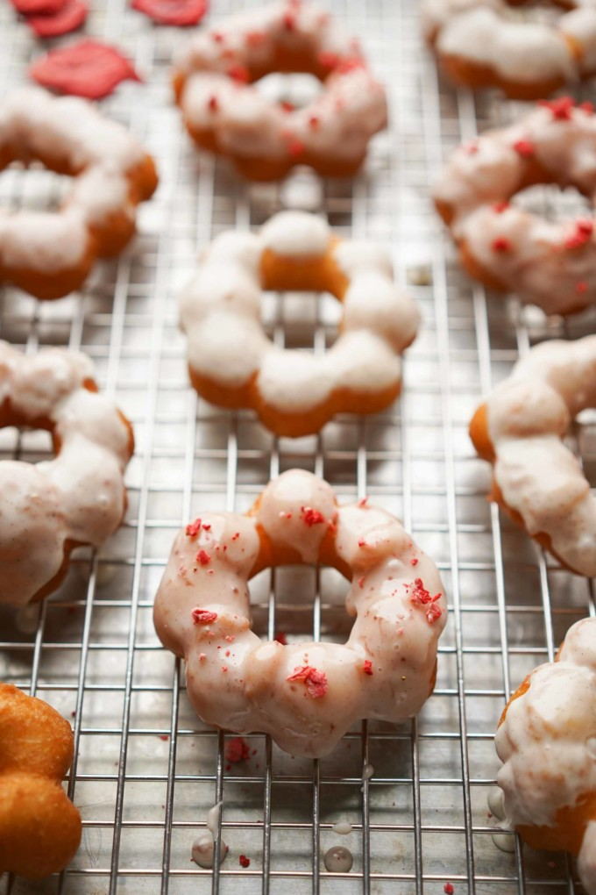

Mochi Donut

Step into the realm of culinary delight with our tantalizing mochi donut recipe. These delightful treats offer a unique twist on the classic donut experience, blending the chewy texture of Japanese mochi with the satisfying crunch of a traditional donut.
Ingredients
Donuts
- 150 g (1 c & 1 tbsp) mochiko flour
- 115 g (¾ c & 3 tbsp) tapioca starch
- 8 g (1 ¾ tsp) baking powder
- .8 g (½ tsp) salt
- 75 g (⅓ c) white granulated sugar
- 1 large egg
- 150 g (5 fl oz) whole milk
- 24 g (2 tbsp) vegetable shortening
- neutral cooking oil
Vanilla Bean Glaze
- 120 g (1 c) powdered sugar
- 48 g (1 ½ fl oz) whole milk
- ½ tsp vanilla bean paste
Strawberry Glaze
- 120 g (1 c) powdered sugar
- 32 g (1 fl oz) whole milk
- 1 tsp strawberry preserves or jam
Steps
Donuts
- Combine the dry ingredients, the mochiko flour, tapioca starch, baking powder, and salt in a bowl and mix.
- Combine wet ingredients. In a separate large mixing bowl, combine the sugar, egg, milk, and vegetable oil until it’s fully combined. The vegetable shortening will be pea sized.
- Sift the dry ingredients into the large mixing bowl.
- Use a spatula to mix and stir the donut dough until it’s fully combined, making sure to incorporate the shortening as much as you can.
- Cut parchment paper into 3 x 3 inch squares. To make piping easier, create a template of a 2 ½ inch circle on a plain piece of paper and tape it to the table. Make 8 dots evenly spaced on the circle, this will be the spots where you will pipe each ball so that you create an 8-ball ring. Add one piece of parchment over and follow dots with the piping bag.
- Add a size 808 piping tip into a piping bag. Fill the piping bag with donut dough and squeeze the opening until the dough comes out of the tip.
- Squeeze out about 1 tsp of dough on each dot on the parchment paper. Use a paring knife or butter knife to slice off the dough from the tip of the piping bag for a clean cut. I like to wipe the knife every time I make a cut. Repeat until you do all 8 dots. At the end, you should have an 8-ring donut and all the balls should connect slightly to each other. Repeat with all the donuts.
- Add at least 2 inches of oil in a heavy bottomed pot over medium-high heat. Preheat the oil to 350F.
- Carefully lower one parchment paper of donut down into the heated oil. My 3 ½ quart pot can fit two donuts per batch. Do not try to crowd the donuts.
- After about 1 minute, use tongs to remove the parchment, it should easily come off. Use a strainer to turn the donut around and gently press the donut into the oil so it’s submerged. Continue to cook for about another minute or until it’s light brown. There is no gluten flour in this batter so it will not turn super brown.
- Use the strainer to transfer the donut onto a paper towel-lined rack over a sheet pan. Repeat with all the donuts.
Glazes
- Vanilla bean: Combine the powdered sugar, milk, and vanilla bean in a bowl with a whisk. The thickness needs to be similar to maple syrup. To make it thicker, add more powdered sugar. To make it thinner, add more milk slowly.
- Combine the powdered sugar, milk, and strawberry preserves in a bowl with a whisk. The thickness needs to be similar to maple syrup. To make it thicker, add more powdered sugar. To make it thinner, add more milk slowly.
- Assembly: Take one fresh donut (slightly warm after cooling on the rack) and dip it into a glaze and place it back on the cooling rack without the paper towel. Let it rest for 1 minute to allow the glaze to harden. Repeat with the rest of the donuts.
- Serve immediately.